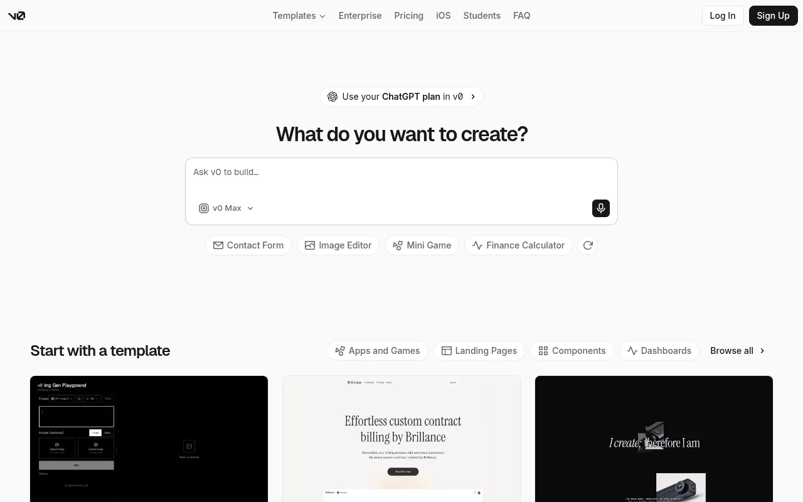
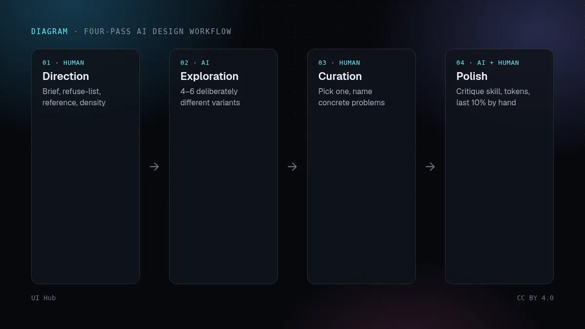
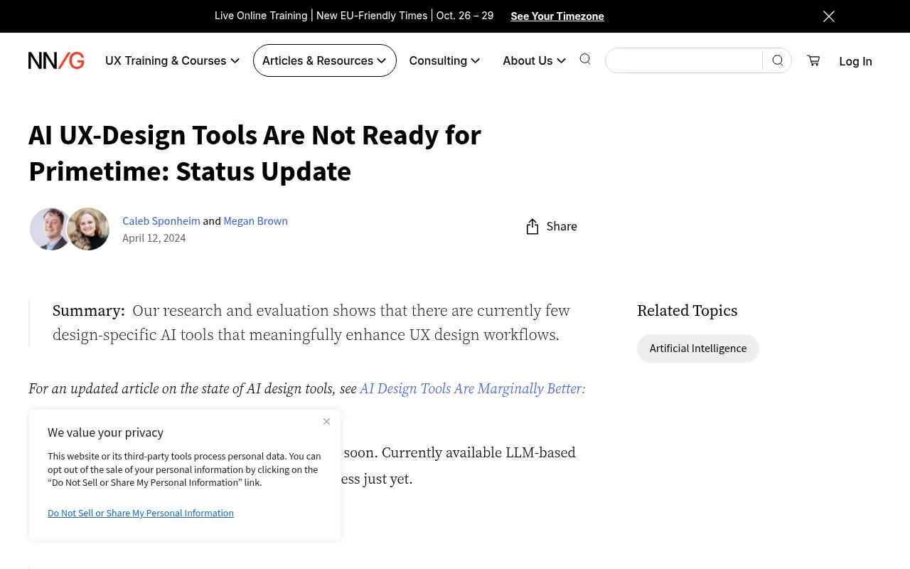

所有 AI 界面生成器都会收敛到训练数据的"平均值"：居中大标题、三张特性卡、一道紫色渐变。这不是 bug，而是"最可能的下一个词"的本义。结论很直接：速度已经免费，稀缺的是审美输入。

v0 首页：用于生成界面的提示输入框 · 截图：v0 by Vercel（v0.app），2026-10-14 截取，版权归原站所有
把活拆成四遍
- 定方向（人）：写一段话的简报——给谁用、想要的一个形容词和拒绝的一个形容词、一个参考产品、信息密度。NN/g 对 AI 设计工具的测试显示，提示里没有真实上下文时，产出几乎都是通用模板。
- 铺变体（AI）：让 v0 或 Claude 一次给 4–6 个刻意不同的方向，而不是一个"最好"的页面。多样性才是生成器的长处。
- 挑选（人）：选定一个，再用具体语言指出问题，比如"行宽超过 80 字符""两个强调色在打架"。
- 打磨（AI + 人）：把意见喂回去，或者跑 impeccable、baseline-ui 这类走查 skill，最后 10% 手工收尾。

四遍工作流示意：定方向、铺变体、挑选、打磨 · 示意图：UI Hub 原创，CC BY 4.0
我们的看法
最大的收益不在生成，而在约束文件：一份简短的 DESIGN.md，写清 token、间距刻度和禁用样式，让每个 Agent 先读它。一次好决定就能变成一百个一致的页面。在 UI Hub 里筛选「Skill」就能找到现成的。

NN/g 关于 AI 设计工具现状的文章 · 截图：Nielsen Norman Group（www.nngroup.com），2026-10-14 截取，版权归原站所有清单
- 简报里有"禁止"清单
- 要变体，不要单页
- 点名具体问题
- 把决定固化成 token